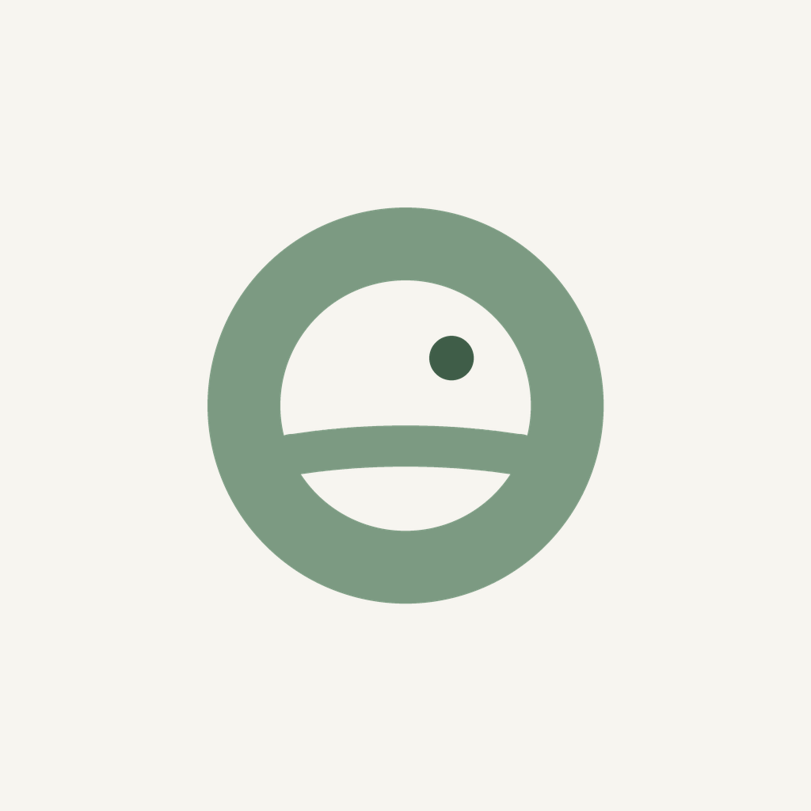

Apaisant · calm software
Quiet apps for minds that feel the world keenly.
Apaisant makes gentle, low-noise tools for people who notice everything. No clamour, no clutter, no tracking. Just calm, useful software, starting with the weather.

QuietSkies
The weather, reframed for calm. QuietSkies turns the forecast into a single Calm Score: how gentle or demanding the day outside will feel, so you can plan around it. Made for autistic and sensory-sensitive people.
Learn more about QuietSkies →Our approach
Calm, all the way down.
Calm is not a coat of paint. It is every small decision: what we show, what we leave out, and what we refuse to collect.
Calm by design
Muted colours, no startling alerts, nothing that clamours for attention. Every choice lowers the noise instead of raising it.
Private by default
No accounts, no analytics, no trackers, no ads. Your information stays on your device. There is nothing for us to collect, and we do not.
Free, and staying that way
Apaisant apps are free to use. No subscriptions, no upsells, no catches. Just tools we think should exist.